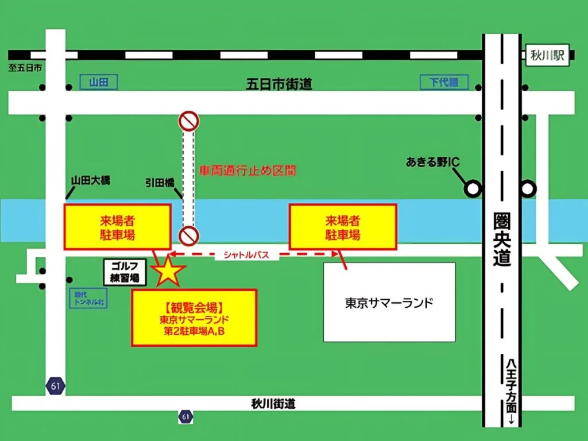
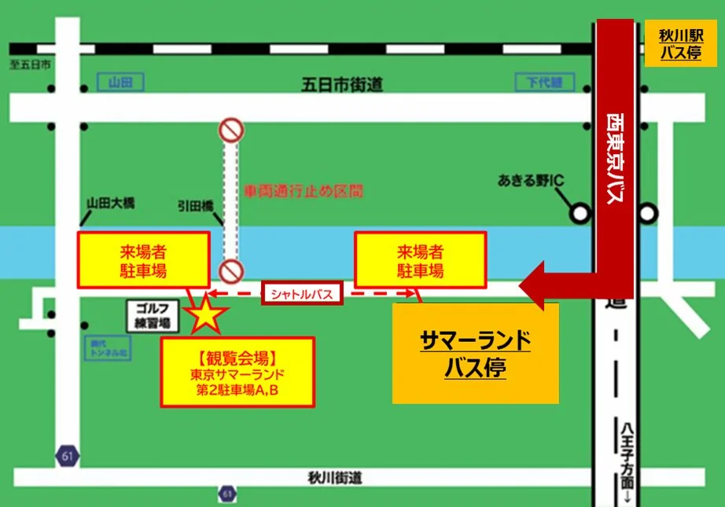
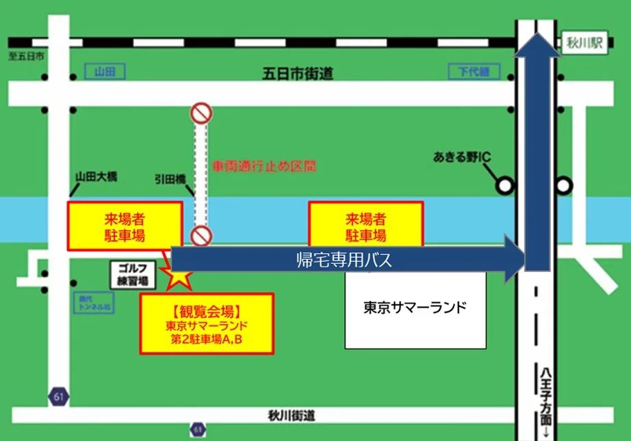

主要駅から会場までの目安時間
東京都心からは電車・車ともに約 60〜80 分でお越しいただけます。
| 出発地 | 電車 | 車 |
|---|---|---|
| 新宿駅 | 約 60 分 | 約 60 分 |
| 東京駅 | 約 75 分 | 約 80 分 |
| 渋谷駅 | 約 70 分 | 約 70 分 |
| 立川駅 | 約 30 分 | 約 25 分 |
| 八王子駅 | 約 25 分 | 約 20 分 |
| 横浜駅 | 約 100 分 | 約 90 分 |
※ 所要時間は目安です。当日の道路・運行状況により前後する場合があります。
車でお越しの方へ
〒197-0834 東京都あきる野市引田
Tokyo Summerland 2nd Parking Lot, Hikida, Akiruno-shi, Tokyo 197-0834, Japan
無料駐車場、路線バスあり。
車・公共交通機関での詳細アクセスはこちらをご覧ください。

- 観覧会場横の駐車場と、東京サマーランド本体側の駐車場の2か所をご用意しております。
- 東京サマーランド本体側から観覧会場への移動は、無料シャトルバスをご利用ください。
※目安として15分～20分間隔で運行します。
※徒歩では15分～20分程度です。
公共交通機関でお越しの方へ
会場への行き方

- 「秋川駅」バス停から、「サマーランド」バス停へ、路線バスで向かってください。(片道230円)
※花火開始は18:00ですので、16:46発までのバスにご乗車ください。 - 「サマーランド」バス停から観覧会場までは、無料シャトルバスでお越しください。
※目安として15分～20分間隔で運行します。
※徒歩では15分～20分程度です。
秋川駅→サマーランドバス停 時刻表
| 発（秋川駅） | 着（サマーランド） |
| 08:46 | 08:56 |
| 09:46 | 09:56 |
| 10:46 | 10:56 |
| 11:46 | 11:56 |
| 12:46 | 12:56 |
| 13:46 | 13:56 |
| 14:46 | 14:56 |
| 15:46 | 15:56 |
| 16:46 | 16:56 |
| 17:46 | 17:56 |
会場からの帰り方（花火終了後）

- 花火終了は18:50頃を予定しております。観覧会場から、秋川駅までの無料バスをご用意しておりますので、こちらにご乗車ください。